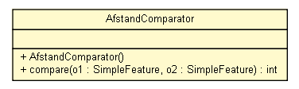

nl.geozet.common
Class AfstandComparator

java.lang.Object
 nl.geozet.common.AfstandComparator
nl.geozet.common.AfstandComparator
- All Implemented Interfaces:
- Serializable, Comparator<org.opengis.feature.simple.SimpleFeature>
public class AfstandComparator
- extends Object
- implements Comparator<org.opengis.feature.simple.SimpleFeature>, Serializable
AfstandComparator wordt gebruikt voor het vergelijken van de afstand naar een
vast punt (de zoeklocatie) tussen twee
SimpleFeature's, de afstand
is opgeslagen in de
Property.getUserData() van de
Feature.
- Since:
- GeoTools 2.7
- Author:
- prinsmc@minlnv.nl
- See Also:
SimpleFeature,
Serialized Form
|
Method Summary |
int |
compare(org.opengis.feature.simple.SimpleFeature o1,
org.opengis.feature.simple.SimpleFeature o2)
Vergelijkt de afstand van o1 kleiner is dan die van o2. |
| Methods inherited from class java.lang.Object |
clone, equals, finalize, getClass, hashCode, notify, notifyAll, toString, wait, wait, wait |
AfstandComparator
public AfstandComparator()
compare
public final int compare(org.opengis.feature.simple.SimpleFeature o1,
org.opengis.feature.simple.SimpleFeature o2)
- Vergelijkt de afstand van o1 kleiner is dan die van o2. De aftstand is
een
UserData attribuut van de SimpleFeature.
- Specified by:
compare in interface Comparator<org.opengis.feature.simple.SimpleFeature>
- Parameters:
o1 - de te vergelijken SimpleFeatureo2 - de vergeleken SimpleFeature
- Returns:
- 1 als die afstand groter is en 0 als de afstand gelijk is.
- See Also:
Comparator.compare(java.lang.Object, java.lang.Object),
Property.getUserData()
Copyright © 2010 team GEOZET. All Rights Reserved.